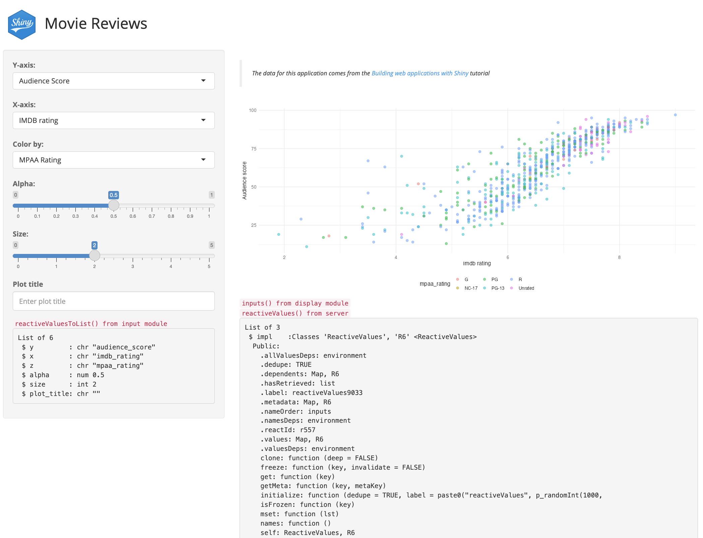
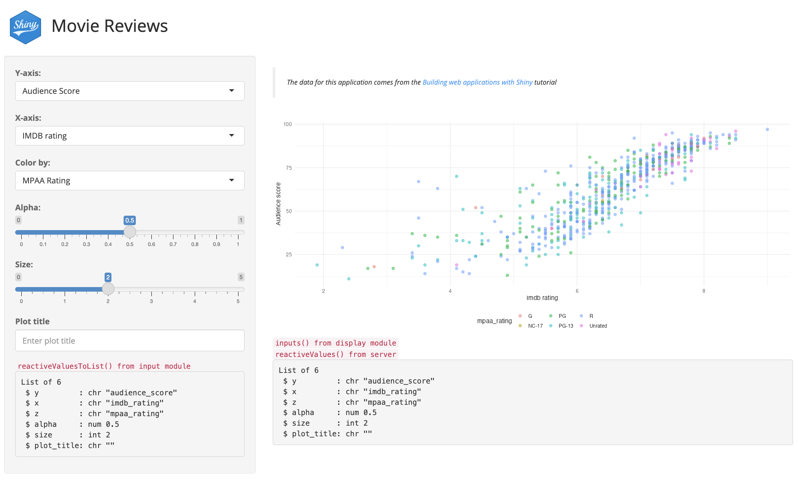
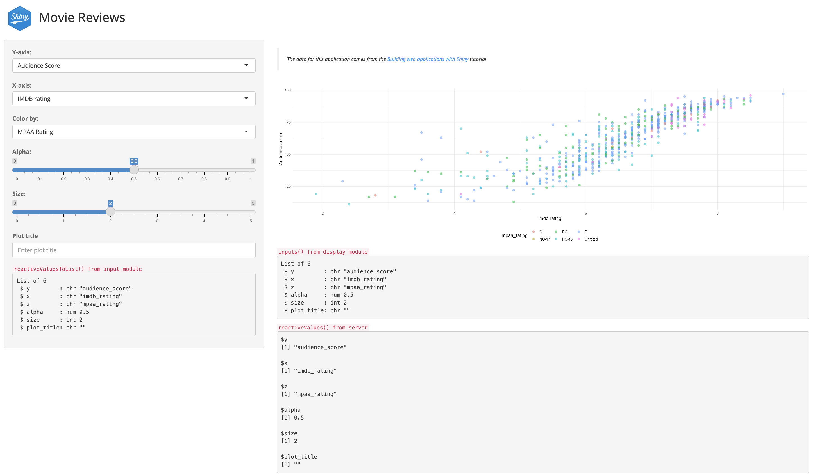

This chapter covers using reactiveValues() to store reactive values. Determining whether or not to use reactiveValues() will depend on the purpose you want it to serve in your application. 1
Calling reactiveValues() will create “an object for storing reactive values.”2 We’ve been storing the reactive values returned from the var_input module in the selected_vars object, then passing these values into the scatter_display module.
Below is a demonstration of using reactiveValues() to capture the selected_vars values returned from the var_input module and passed to the scatter_display module.
19.1.1 App server
The first changes in this branch you’ll notice are a series of changes made to movies_server():
reactiveValues() is used to create rVals
Instead of creating the selected_vars, the output from mod_var_input_server() is assigned to rVals as inputs
rVals is then passed as an input argument to mod_scatter_display_server()
.dev arguments have been added to both module server functions (and have been set to FALSE)
# assign inputs to rValsmovies_server <-function(input, output, session) {# create reactive values rVals <-reactiveValues()# assign inputs to rVals rVals$inputs <-mod_var_input_server("vars", .dev =FALSE)# view output in the UI# output$vals <- renderPrint({# str(rVals)# # str(rVals$inputs())# })# pass reactive values to displaymod_scatter_display_server("plot", rVals = rVals, .dev =FALSE)}
1
New reactiveValues() object
2
Returned values from mod_var_input_server() assigned to rVals$inputs
3
renderPrint() for str(rVals) and str(rVals$inputs()) (commented)
4
rVals object passed to mod_scatter_display_server()
In the steps below, we’ll view the structure and function of rVals and the reactive values in the application using methods covered in the Debugging chapter.
19.1.1.1 Step 1
Change .dev in mod_var_input_server() to TRUE in movies_server(), then load and run the application. The updated movies_server() function should look like this:
# assign inputs to rValsmovies_server <-function(input, output, session) {# create reactive values rVals <-reactiveValues()# assign inputs to rVals rVals$inputs <-mod_var_input_server("vars", .dev =TRUE)# view output in the UI# output$vals <- renderPrint({# str(rVals)# # str(rVals$inputs())# })# pass reactive values to displaymod_scatter_display_server("plot", rVals = rVals, .dev =FALSE)}
1
Set .dev to TRUE
When the application launches, you should see the following:3
(a) .dev = TRUE in mod_var_input_server()
Figure 19.1: reactive values from mod_var_input_server()
The output in the sidebar are the reactive values from the variable input module, which we’ll cover below.
19.1.2 Modules
mod_var_input_server() has been simplified to return the output from reactiveValuesToList(). The same output is also being rendered in the sidebar when .dev is set to TRUE:
Remove the comments from the renderPrint() lines in movies_server() to view the structure of rVals, then load and run the application. The new movies_server() function should now look like this:
# assign inputs to rValsmovies_server <-function(input, output, session) {# create reactive values rVals <-reactiveValues()# assign inputs to rVals rVals$inputs <-mod_var_input_server("vars", .dev =TRUE)# view output in the UI output$vals <-renderPrint({str(rVals)# str(rVals$inputs()) })# pass reactive values to displaymod_scatter_display_server("plot", rVals = rVals, .dev =FALSE)}
1
Set .dev to TRUE
2
Remove comments from str(rVals)

(a) str(rVals)from movies_server()
Figure 19.2: rVals$inputs() from movies_server()
19.1.3 What is reactiveValues()?
“When you read a value from it, the calling reactive expression takes a reactive dependency on that value, and when you write to it, it notifies any reactive functions that depend on that value. Note that values taken from the reactiveValues() object are reactive, but the reactiveValues() object itself is not.”Shiny Documentation
I’ve added emphasis to the quote above because it’s important to remember that any object assign to reactiveValue() should be treated like any reactive object (i.e., and inputId or object returned from reactive() or observe()).
For example, if we try to access the input values as a list outside the a movies_server() or module function, we see the following error:4
## Error in `x$inputs`:## ! Can't access reactive value 'inputs' outside of reactive consumer.## ℹ Do you need to wrap inside reactive() or observe()?
19.1.3.1 Step 3
Now let’s remove the commented lines from renderPrint() to view the structure of rVals$inputs(), then load and run the application. The new movies_server() function should now look like this:
# assign inputs to rValsmovies_server <-function(input, output, session) {# create reactive values rVals <-reactiveValues()# assign inputs to rVals rVals$inputs <-mod_var_input_server("vars", .dev =TRUE)# view output in the UI output$vals <-renderPrint({# str(rVals)str(rVals$inputs()) })# pass reactive values to displaymod_scatter_display_server("plot", rVals = rVals, .dev =FALSE)}
1
Set .dev to TRUE
2
Remove comments from str(rVals$inputs())

(a) str(rVals)from movies_server()
Figure 19.3: rVals$inputs() from movies_server()
The rVals$inputs() being rendered in movies_server() are the returned values from the variable input module (and they’re identical to the value in the sidebar).
When rVals is passed to mod_scatter_display_server(), the reactive inputs() object inside the function can be built using rVals$inputs():
The .dev argument displays the structure of rVals$inputs() inside mod_scatter_display_server() if it’s set to TRUE:
if (.dev) {# view output in the UI output$display_vals <-renderPrint({str( rVals$inputs() ) }) }
19.1.3.2 Step 4
Set .dev to TRUE in mod_scatter_display_server(), then load and run the application. The final movies_server() function should now look like this:
# assign inputs to rValsmovies_server <-function(input, output, session) {# create reactive values rVals <-reactiveValues()# assign inputs to rVals rVals$inputs <-mod_var_input_server("vars", .dev =TRUE)# view output in the UI output$vals <-renderPrint({# str(rVals)str(rVals$inputs()) })# pass reactive values to displaymod_scatter_display_server("plot", rVals = rVals, .dev =TRUE)}
1
Set .dev to TRUE
2
Remove comments
3
Set .dev to TRUE

(a) .dev set to TRUE and reactive values from movies_server()
Figure 19.4: Both module .dev arguments set to TRUE and rVals$inputs() from movies_server()
An important thing to note is that we can only reference rVals$inputs() in a reactive consumer (i.e., using reactive(), observe(), etc.). That’s why when we change any of the UI inputs, the values change in rVals$inputs() and in the inputs() object inside the display module.
You can also view these outputs using movies_app(run = 'b', bslib = TRUE).
19.2 Testing reactiveValues()
The module tests for test-mod_scatter_display.R had to be redesigned to handle the reactiveValues() input. You can view the full test file in this branch, but to briefly summarize:
args = list() in testServer() now takes the output from helper functions (stored in tests/testthat/helper.R and R/testthat.R). 5
An object created with reactiveValues() is designed to be reactive, so changing values will trigger reactivity in any observers and/or reactives that depend on those values. Remember that ‘values taken from the reactiveValues() object are reactive, but the reactiveValues() object itself is not.’
Mastering Shiny also has a great section on reactiveVal() and reactiveValues()↩︎